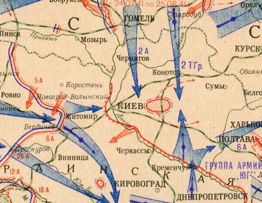

Защищали Киев не только советские солдаты, но и простые жители. Огромные усилия прилагали для этого отряды народного ополчения, которых к началу июля насчитывалось девятнадцать. Также из числа горожан было сформировано 13 истребительных батальонов, а всего в защите Киева приняло участие 33 000 человек из жителей города. В те тяжелые июльские дни киевляне построили более 1400 дотов, вручную вырыли 55 километров противотанковых рвов.

К 15 августа 1941 г. ополчение отбросило гитлеровцев на прежние позиции. Потери врага под Киевом насчитывали больше 100 000 человек. Больше прямых штурмов города гитлеровцы не предпринимали, под ним надолго «увязли» в боях семнадцать немецко-фашистских дивизий. Такое длительное сопротивление защитников города вынудило врага отозвать часть сил из наступления в московском направлении и перебросить их на Киев, в силу чего, советские солдаты были вынуждены отступить 19 сентября 1941 года.